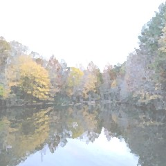
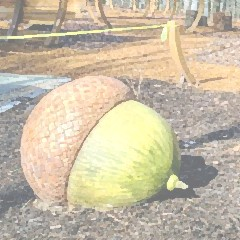

| |
|
難得偷得浮生半日閒
有時候發個懶也是半天這樣過去
提供一些完成難度門檻較低的方案
把握青春趁早 讓周末精實起來吧 |
|
半日遊省錢方案 |
夏天太熱請務必躲進室內
學校圖書館繼續精進學業
館藏豐富的Special Collections Library
還有美術館，見小鎮藝文篇
天氣好時，請參詳下列散策點子
喜歡用散步的方式認識一個地方
這樣的速度剛好讓認知和視覺同步 |
|
UGA北校園歷史巡禮(也是很好的校園參觀路線)
估計時間: 全力奔走一小時路程完成
建議路線: 把車停在W01,02
>穿越草皮小徑，Ramsey雕像在長椅上乘涼
>Arch，鎮校地標，傳聞在學時穿越會畢不了業
>直走時往左邊看，是學校最起初建立的校舍們
>右轉UGA Chapel，古色古香，搖個鐘散播喜悅
>噴水池，草地上很適合野餐
>路過法律系、圖書館、大眾傳播系(看到飛碟嗎)
>特別提名Memorial Hall門口有隻醜bulldog雕像
>球場，整修過後隨時敞開雙臂歡迎的開闊視野
> Tate/ UGA 書店，地下一樓長廊Athens地標集合
>穿回Lumpkin，直走有Special Collections Library
>Baldwin右轉頭有羅馬柱大門的歌劇院
>回到W01,02停車場，功德圓滿
|
 |
|
Martin Luther
與
College Ave
的路口 |
沿著Greenway走到Sandy Creek Nature Center
估計時間: 愜意散步一個半小時內來回路程完成
建議路線: 停在免費停車場(開放時間日出到日落)
這段步道直到自然中心都很平坦好走 適合慢跑
快到自然中心的時候會輻射延伸許多探險小支線
Sandy Creek Nature Center適合一家大小參觀
館藏比外觀想像的豐富有趣 很直覺的介紹方式
特別提及: 有一條Cook's Trail可以走到Sandy Creek Park，但是因為沒有鋪路會因大雨而關閉 |
|
Firefly Trail(繼Greenway的明星路線)
全長估計時間: 等走過才知道
2018春天先局部開放了E Broad St到Mama's boy
(過街後再往東南還有一段但不在建議步行路線裡)
這段單趟步行時間約二十分鐘，路況平坦好走但有點曬
建議路線: 把車停在N03，或周日路邊隨意停
>從E Broad St入口進去，有一隻藍色bulldawg
>路經向日葵大型公共藝術，過橋
>在Dudley Park裡轉一轉，這裡也有免費停車場
>在芬多精樹林裡看到廢棄木造鐵路高架
>因為後段還沒開通只好到Mama's Boy吃頓好的
>原路折返回去，順便消化剛剛進食的美味 |
|
Lake Herrick
不建議繞湖一周，因為會有一段人車爭道小可怕
估計時間: 一小時內完成，盤根錯節小心走
有兩個可以停車的地方，一個在Intramural Fields入口處
推薦繼續往裡開，在到底"前"左轉
就會看到另一個免費停車場，沿著木棧道入口處往前行
令人心情無敵平靜的湖瞬間開展眼前
往右邊看，湖面上有一頭很奇葩的金屬鹿雕塑
過橋後右轉會走進深不可測的Oconee Forest Park
所以要左轉才是沿著湖邊的舒適正途
差不多走到第二個碼頭的時候就可準備回去啦 |
 |
|
 |
植物園
(喜歡動物的請去動物園)
夏天去植物園要準備好防蚊液，不然就請躲溫室
橘白紫步道google map上都有畫出可自行串接
從入口開進，通往地圖有個arch型的免費停車場
往裡走，右是2019開幕的兒童公園，左是植物園溫室和花園
無步道建議路線: (步道入口到處都有 歡迎亂入)
先右轉到很愉悅的兒童公園感受歡樂(有飲水機)
>回來過小橋從International Garden逛起(有鳥居)
>逆時針逛去像迷宮的Heritage Garden，稍有坡度
>從溫室的後門進去開始逛裡面，時有活動舉行 |
UGA校園快問快答
Q 最喜歡的角落?
A 森林系周遭。
Q 最驚險的路段?
A E Campus的鐵軌中間
騰空橫跨River Rd段。
!!!懼高勿入!!!
Q 最期待的路線?
A Greenway一路打通PAC。 |
|
|
|
半日遊來血拚 |
Downtown很適合亂走亂晃
在好所在篇已整理送禮自用兩相宜店家
如果需要幫衣櫃添購新品
或是趁大特價時把返鄉伴手禮備齊
或是喜歡逛街練腳力
Athens北邊就是方向 |
|
Tanger outlet
位於Commerce
離Athens北邊開車半小時的
規模不算大，走起來不會太累
推薦可以花十塊錢加入會員
提前規劃採買清單
趁有假日大優惠時來
保證一次賺回入會費
品牌強項: 衣鞋包 |
J&J Flea Market
Athens北邊開車半小時
喬治亞最大的Flea Market
賣的東西千奇百怪
從生鮮蔬果、美食街、古董
甚至家具和二手車
推薦適合天氣不會太熱的時候
悠哉悠哉來尋寶
朋友Louise推薦這裡的燙花生
有她這輩子吃過最好吃 |
|
|
半日遊來找東方味 |
Duluth
Athens西邊車程四十分鐘
印象中是美國前幾大的韓國城
亞洲料理為強項
光這裡食物就可以寫一大篇
推薦: 買菜、覓食
以及有包廂的karaoke |
|
|
半日遊來嘗鮮 |
鎮上附近的觀光工廠寓教於樂
順便品嘗最新鮮出品的美味 |
|
Condor Chocolates
Five Points的巧克力專賣店
位在Chase Street的工廠
每月第三個周六開放觀光參觀
每人十五元
不過目前官網寫無限延期
直到進一步通知…… |
Mayfield Dairy Tours
Athens西北方四十分鐘車程
闔家歡樂
參觀冰淇淋及乳製品的製作
以Mayfield美味冰淇淋結尾 |
|
|
半日遊來去戶外 |
這裡的優勢就是與大自然非常親近
很容易抵達有山有水的天地靈氣
注意有些活動期間限定，把握及時
小叮嚀: 防曬防蟲安心出遊 |
|
夜間健行-滿月夜
Full Moon Hike顧名思義
每個月一次在滿月之夜的健行
平常白天才開放的植物園步道
每個月一次的主題之夜
在專人帶領下夜間健行
總健行時間: 一個半小時
每人五元，每個家族十五元
行前需上官網報名 |
螢火蟲-四月
每年四月底抽入山賞螢許可
Great Smoky Mountains
Athens西邊車程一小時
期間限定，中獎率極低
同步閃爍的螢火蟲奇景
需密切注意官網公布開放時程 |
熱氣球節-夏秋
搭著熱氣球和藍天的一年一會
Sandy Creek Park一日限定
入園五元搭乘十元，只收現金
遙遠一點的Helen
會有為期三日的系列活動
每年活動日期請洽各官網為準 |
|
泛舟-夏
Broad River Outpost
在Athens東北方半小時車程
Kayak路線分難度，一人一舟
上了賊船就一去不回頭的向前
需時至少四小時
記得防曬、替換衣物、輕便佳
膠底鞋避免赤腳踩河底礫石
建議在六七月水量充足時去
以避免頻頻擱淺的窘境
每人二十五元，十人團體折扣 |
划船-五到八月
Sandy Creek Park
在Athens北邊開車十多分鐘
入園費每人兩元
裡面以湖為中心
有繞湖步道、球場、烤肉區
推薦划船，租船每小時五元
可獨划或兩人共乘
開放時段Memorial Day到Labor Day間的周末 |
|
|
更多半日遊方案 |
除了戶外大自然的活動之外
室內也有一些意想不到的有趣體驗 |
打靶
Athens Gun Club
場地有十幾道靶
自行調整靶子遠近
需要向店家購買靶紙
槍枝子彈可自備
也可向店家租借購買 |
溜冰-冬
Classic Center
每年冬天這裡會搖身一變城溜冰場
舉辦激烈的Hockey比賽
也讓民眾能在室內溜冰
無經驗者也可租借可愛輔助器材
讓大人小孩都能體驗溜冰的滋味
入場門票每人十三元 |
奇妙活動-Kitty
Yoga
有想過可以跟喵咪一起做瑜珈嗎
在Memorial
Park的瑜珈教室
領養動物協會把小貓咪帶進教室中
(明顯想讓學員分心)
各式瑜珈姿勢進行間
幸運者會與喵喵各類接觸
周二傍晚六點，課費每次五元 |
| |
 |
|